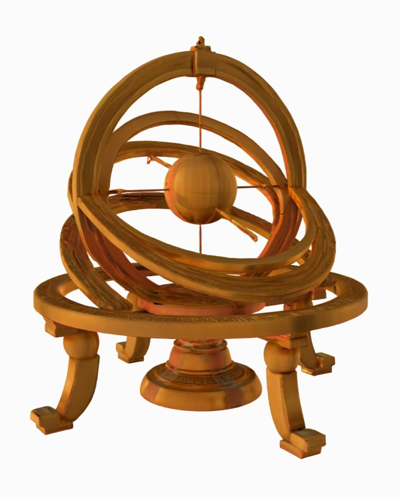

———五颜六色的白
北宋元祐元年，汴京的街道上热闹非凡，人来人往，叫卖声、谈笑声交织成一片繁华的乐章。你正穿梭在这熙熙攘攘的人群中，突然阵神秘的风卷起地上的落叶，眼前白光一闪，一本古朴陈旧的书籍出现在你的手中。那书的封皮上刻着一些古老的字迹，散发着奇异的光芒。你刚一触碰到它，一股强大的吸力将你紧紧包裹，周围的景象开始急速旋转，仿佛整个世界都在崩塌。
当你再次睁开眼睛时，发现自己置身于一个陌生而又充满古韵的庭院之中。远处，一位身着长袍、气质儒雅的男子正站在亭台楼阁之下，手持书卷，时而低头沉思，时而抬头望向天空。你心中一惊，仔细打量四周，才发现自己竟然穿越回了北宋，站在了沈括的身旁！
沈括生于杭州官宦世家，自幼天赋过人，爱探索。他常在西湖畔赏景思索，也爱泡书斋探寻古人智慧。
任沭阳县主簿，带百姓治水，改善农业，获百姓称赞。
科举中第，此后在朝廷任多职，为国家发展建言献策。
《梦溪笔谈》卷二十四《象数》中，以“日月之形如丸”突破传统宇宙观，提出“月本无光，犹银丸，日耀之乃光耳”，并以“粉涂弹丸，侧视如钩，对视正圜”的实验模拟月相，展现古代实证科学思维。
卷十八《技艺》记载毕昇活字印刷术，详述 “胶泥刻字，火烧令坚” 的制字工艺，及 “松脂、蜡和纸灰” 固定活字的技术，强调 “印数十百千本则神速” 的高效性。毕昇首创的胶泥活字、字模分类（“每韵一帖，木格贮之”）等，构成现代活字印刷雏形。沈括的记录不仅是该技术唯一早期文献，更以精准笔触留存了宋代科技的璀璨创造，堪称文明传承的关键注脚。
动手做胶泥活字，按韵部排版、刷墨拓印，看汉字在手中「复活」，秒变毕昇同款「活字工匠」！
用古式浑仪观测星星，模拟「月亮借太阳光发亮」的实验，像沈括一样琢磨宇宙的小秘密～
沈括微笑着向你作揖，眼中满是期许：“今日之遇，实为幸事。望你将此间所学所见，传于后世，让更多人领略科学之妙。” 话音未落，白光一闪，你已回到现代。手中的《梦溪小筑》手账散发着淡淡的微光，每一页的记录都成为连接古今科学的纽带。
在墨韵工坊与沈括共同完成活字印刷的瞬间，古朴的宣纸上跃然浮现出千年文明的印记，而浑仪转动间，星辰仿佛也在诉说着亘古不变的宇宙奥秘。正当你沉浸于这奇妙的科学世界时，那股神秘的吸力再次出现，周遭的景象开始变得模糊。
北宋庆历年间（1041 - 1048），工匠毕昇首创胶泥活字印刷术，突破雕版印刷整版雕刻、无法复用的技术瓶颈。沈括在《梦溪笔谈·技艺》中不仅完整记录了活字选材、制作、排版、印刷的全流程，更从科学角度对该技术进行分析与优化，使这项发明得以完整留存于历史。
在技术改进方面，沈括强调胶泥的物理优势，其可塑性强、烧制后硬度适中，相比木活字不易变形，较金属活字成本更低且化学稳定性好，不与墨水发生反应；在排版工艺上，他提出分层排版和松脂蜡粘合剂体系，通过铁板导热实现快速熔合与冷却，配合铁范灵活调整版面尺寸；此外，沈括还主张活字尺寸标准化，要求字模厚度统一，以确保印刷压力均匀，显著提升排版效率。 该技术以细腻黏土制成活字，经刻制、低温烧制（约600℃）后形成陶质字模，按韵部或部首分类存放。印刷时，在铁板上铺设松脂与蜡的粘合剂，以铁范固定排版区域，拣选活字紧密排列并嵌入竹楔加固。加热使粘合剂熔化后，用平板压实活字，冷却固定后即可刷墨印刷，印毕再次加热回收活字循环使用。
这项发明显著降低印刷成本、提升效率，尤其适用于批量印刷。虽存在陶质活字易磨损、排版需熟练技艺等局限，但经元代木活字改良，沿丝绸之路传播至东亚、欧洲，直接启发15世纪德国古腾堡铅合金活字印刷术，为文艺复兴奠定技术基础，对人类文明传播产生深远影响。沈括的记录与改进，堪称古代科技传承与创新的典范。
在古代中国，浑仪就像一台神秘的“星空测绘仪”，由层层同心圆环组成，专门用来测量日月星辰的位置。从汉代张衡到唐代李淳风，一代代天文学家不断改进，但复杂的结构反而成了观测的“绊脚石”。
1072年，北宋因日食预报失误急需革新历法，沈括临危受命，扛起了改造浑仪的重任。他做的第一件事就是“断舍离”：果断去掉白道环，让赤道环和黄道环清晰可见，再也不怕视野被遮挡！面对北极星位置偏差的难题，沈括化身“星空侦探”，连续多夜蹲守观测，终于找准天球北极，精准校准浑仪极轴。
他还为浑仪升级“硬件”：用铜铸环圈、精铁轴承，将刻度精度提升到0.25度；创新“软件”系统，提出多人分工观测和晷影校正法。沈括的这些创举，不仅让浑仪观测更精准，更为后世研究岁差奠定基础，甚至启发郭守敬发明了现代赤道仪的雏形——简仪，堪称古代天文仪器界的“技术革命”！